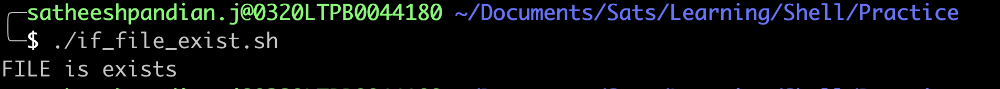
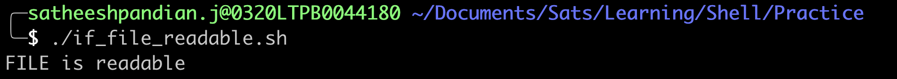
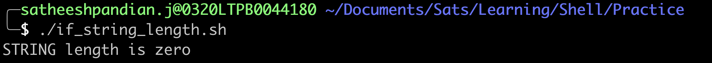
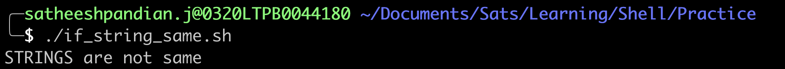
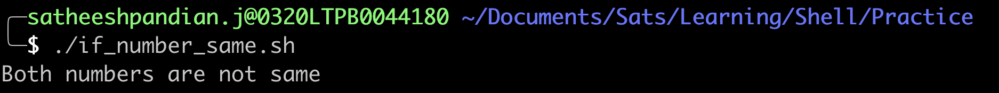

Primary expressions with If condition
| Primary Expression | Meaning |
|---|---|
[ -a FILE ] |
True if FILE exists |
[ -b FILE ] |
True if FILE exists and is a block-special file |
[ -c FILE ] |
True if FILE exists and is a character-special file |
[ -d FILE ] |
True if FILE exists and is a directory |
[ -e FILE ] |
True if FILE exists |
[ -f FILE ] |
True if FILE exists and is a regular file |
[ -h FILE ] |
True if FILE exists and is a symbolic link |
[ -p FILE ] |
True if FILE exists and is a named pipe (FIFO) |
[ -r FILE ] |
True if FILE exists and is readable |
[ -s FILE ] |
True if FILE exists and has a size greater than zero |
[ -w FILE ] |
True if FILE exists and is writable |
[ -x FILE ] |
True if FILE exists and is executable |
[ -z STRING ] |
True of the length if "STRING" is zero |
[ -n STRING] |
True if the length of "STRING" is non-zero |
[ STRING1 == STRING2 ] |
True if the strings are equal. "=" may be used instead of "==" |
[ STRING1 != STRING2 ] |
True if the strings are not equal |
[ ARG1 OP ARG2 ] |
"ARG1" and "ARG2" are integers. Based on arithmetic binary operators return true |
[ -a FILE ]
Assume that you are working in your home directory, and you would like to check if a file exists in your home directory. If a file exists, then you would like to print a message "FILE is exists". Else, you need to print an error message. In such scenario, you can use the following code snippet
Example
I have a file "mkdocs.yml" in the below location. Now, I will check if the file exists or not
{kind=link}
#!bin/bash
if [ -a "/Users/satheeshpandian.j/Documents/Sats/Learning/makedocs/mkdocs.yml" ]
then
echo "FILE is exists"
else
echo "No such file"
fi
{kind=link}

[ -r FILE ]
Assume that you are working in your home directory, and you would like to check if a file is readable in your home directory. If a file exists, then you would like to print a message "FILE is readable". Else, you need to print an error message. In such scenario, you can use the following code snippet
Example
I have a file "mkdocs.yml" in the below location. Now, I will check if the file is readable or not
{kind=link}
#!bin/bash
if [ -r "/Users/satheeshpandian.j/Documents/Sats/Learning/makedocs/mkdocs.yml" ]
then
echo "FILE is readable"
else
echo "FILE is not readable"
fi
{kind=link}

[ -z STRING ]
Assume that you have string variable, and you would like to check string variable length. In such scenario, you can use the following code snippet
Example
In the below code snippet, variable name is empty. We are checking if the variable is empty (length).
#!bin/bash
name=""
if [ -z "$name" ]
then
echo "STRING length is zero"
else
echo "STRING length is not zero"
fi
{kind=link}

[ STRING1 == STRING2 ]
Assume that you have two string variables, and you would like to check if both string variables are same. In such scenario, you can use the following code snippet
Example
In the below code snippet, variables first_name and last_name are defined. We are checking if two names are same.
#!bin/bash
first_name="Satheesh"
last_name="Pandian"
if [ $first_name == $last_name ]
then
echo "STRINGS are same"
else
echo "STRINGS are not same"
fi
{kind=link}

NOTE:
- if [ $first_name = $last_name ] => Also works
- if [[ $first_name == $last_name ]] => Also works
[ ARG1 OP ARG2 ]
In general, ARG1 and ARG2 are numbers. OP is nothing but an arithmatic operator.
| Arithmatic Operator | Meaning |
|---|---|
eq |
is equal to |
ne |
not equal to |
lt |
less than |
le |
less than or equal to |
gt |
greater than |
ge |
greater than or equal to |
Example
In the below code snippet, two numbers are compared to see if both numbers are same or not.
#!bin/bash
if [ 10 -eq 7 ]
then
echo "Both numbers are same"
else
echo "Both numbers are not same"
fi
{kind=link}

High Level Summary
| Expression | Expression | Result |
|---|---|---|
[ xyz = xyz ] |
[[ xyz = xyz ]] |
true (both strings are equal) |
[ xyz != xyz ] |
[[ xyz != xyz ]] |
false (both strings are equal) |
[ 10 -lt 15 ] |
[[ 10 -lt 15 ]] |
true (10 is less than 15) |
[ 10 -gt 15 ] |
[[ 10 -gt 15 ]] |
false (10 is not greater than 15) |
[ 10 -ne 15 ] |
[[ 10 -ne 15 ]] |
true (10 is not equal to 15) |
NOTE
-
[[ condition ]] is preferred when there are patterns involved
Example
| Expression | Meaning |
|---|---|
[[ "xyz" = *y* ]] |
true (string xyz contains y) |
[[ "xyz" = xy[az] ]] |
true (string xyz contains z after xy) This can be considered as [[ xyz = xy[az] ]] or [[ xya = xy[az] ]] |
[[ "xyz" = "xy[ab]" ]] |
false (string xyz does not contain z after xy) |
[[ "xyz" > "abc" ]] |
true (x comes after a when sorted alphabetically) |
[[ "xyz" < "abc" ]] |
false (z does not come after x when sorted alphabetically) |
[[prevents word splitting of variable values. So, if VAR="var with spaces", you do not need to double quote $VAR in the condition.name="Satheesh Pandian" # name has a value with space. So, quote matters in condition if [[ $name = "Sats" ]] # $name is not required to be surrounded by quotes as it is in double square brackets then echo "$name is Sats" else echo "$name is NOT Sats" fi if [ "$name" = "Sats" ] # $name is required to be surrounded by quotes as it is in single square bracket then echo "$name is Sats" else echo "$name is NOT Sats" fi
Combining expressions with If condition
| Expression | Meaning |
|---|---|
| [ condition1 ] || [ condition2 ] or [[ condition1 || condition2 ]] or [ condition1 -o condition2 ] |
True if any one condition is success NOTE: [[ condition1 -o condition2 ]] will not work. Double square brackets with flag (-o) for multiple conditions will not work |
| [ condition1 ] && [ condition2 ] or [[ condition1 && condition2 ]] or [ condition1 -a condition2 ] |
True if both conditions are success NOTE: [[ condition1 -a condition2 ]] will not work. Double square brackets with flag (-a) for multiple conditions will not work |
Example
| Expression | Meaning | |
|---|---|---|
| [ 5 -gt 3 ] && [ 5 -lt 10 ] | true (Both conditions are true) | |
| [ 5 -gt 13 ] || [ 5 -lt 10 ] | true (Second condition is true) | |
| [ 5 -gt 3 -a 5 -lt 10 ] | true (Both conditions are true) | |
| [[ 5 -gt 3 && 5 -lt 10 ]] | true (Both conditions are true) | |
| [[ 5 -gt 13 || 5 -lt 10 ]] | true (Second condition is true) | |
| [ 5 -gt 13 -o 5 -lt 1 ] | false (None of conditions are true) | |
Note
Most programmers will prefer to use the test built-in command, which is equivalent to using square brackets for comparison
Example